Stay
木のぬくもりに包まれながら、
自然の気配を感じて過ごすひととき。
やわらかな朝日が、ゆっくりと一日の始まりを知らせてくれます。
自然を全身で感じる、アウトドアステイ
ホテルライクな快適さと自然が紡ぐ大人のアウトドアステイ
夜は満点の星空の下で農園で採れた野菜で味わうBBQを囲み、
柔らかな朝日で目覚める、最高に贅沢な体験が待っています。
White Dome
-
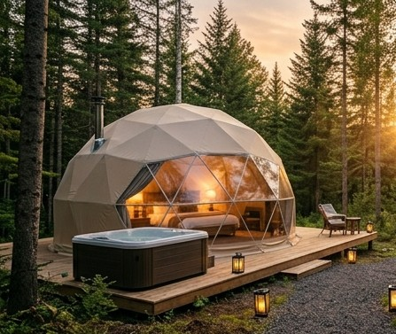
-
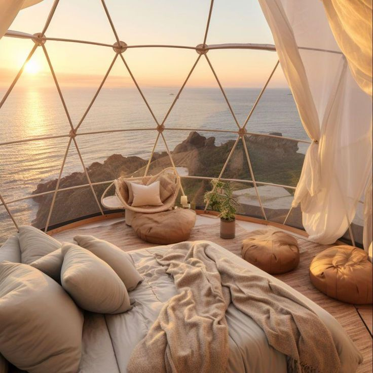
-
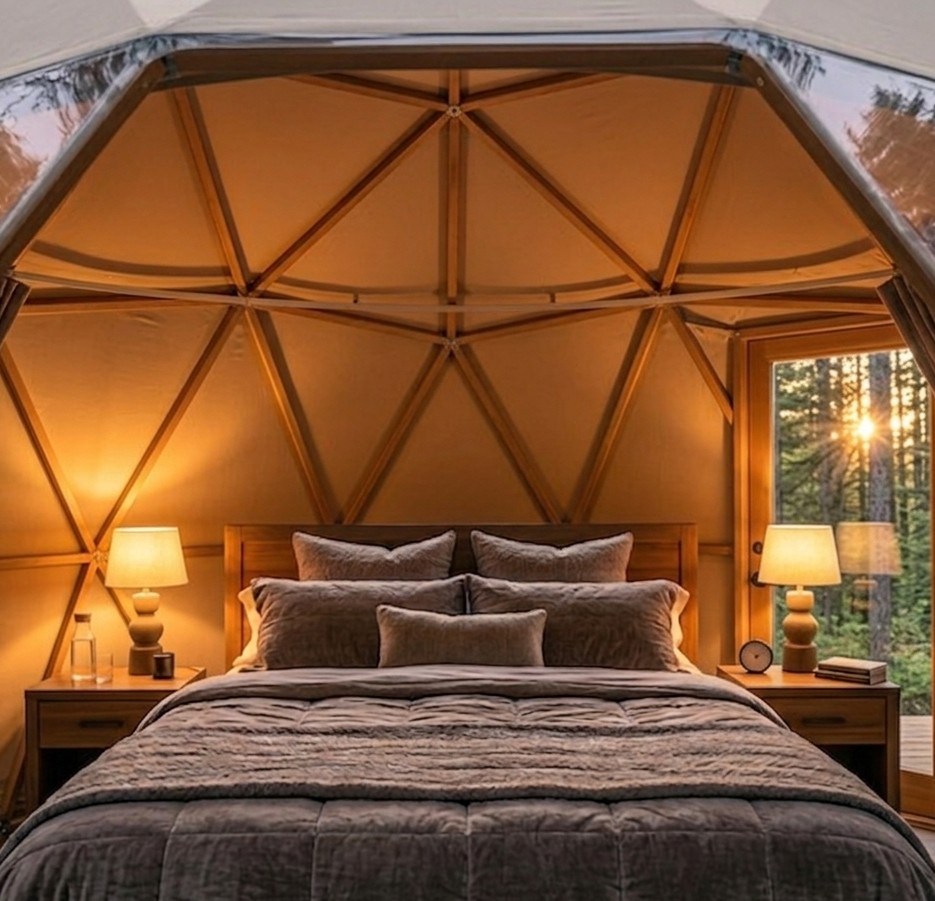
Lotus Tent
-
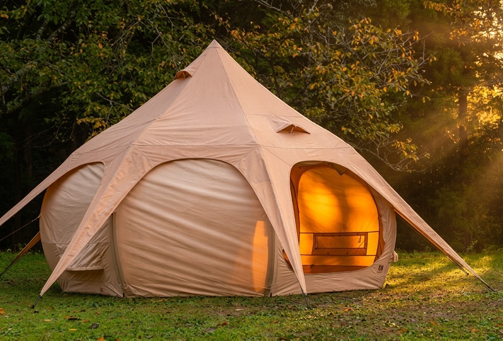
-
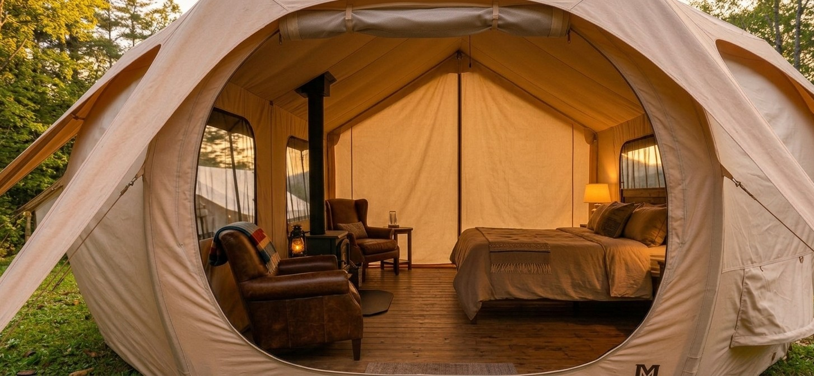
-
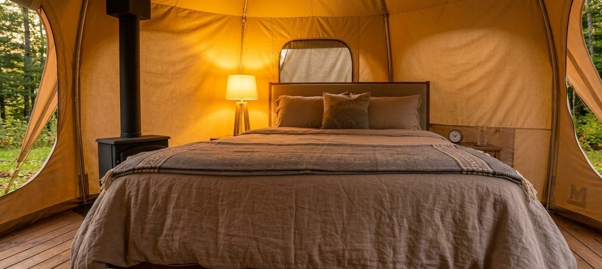
Teepee Tent
-
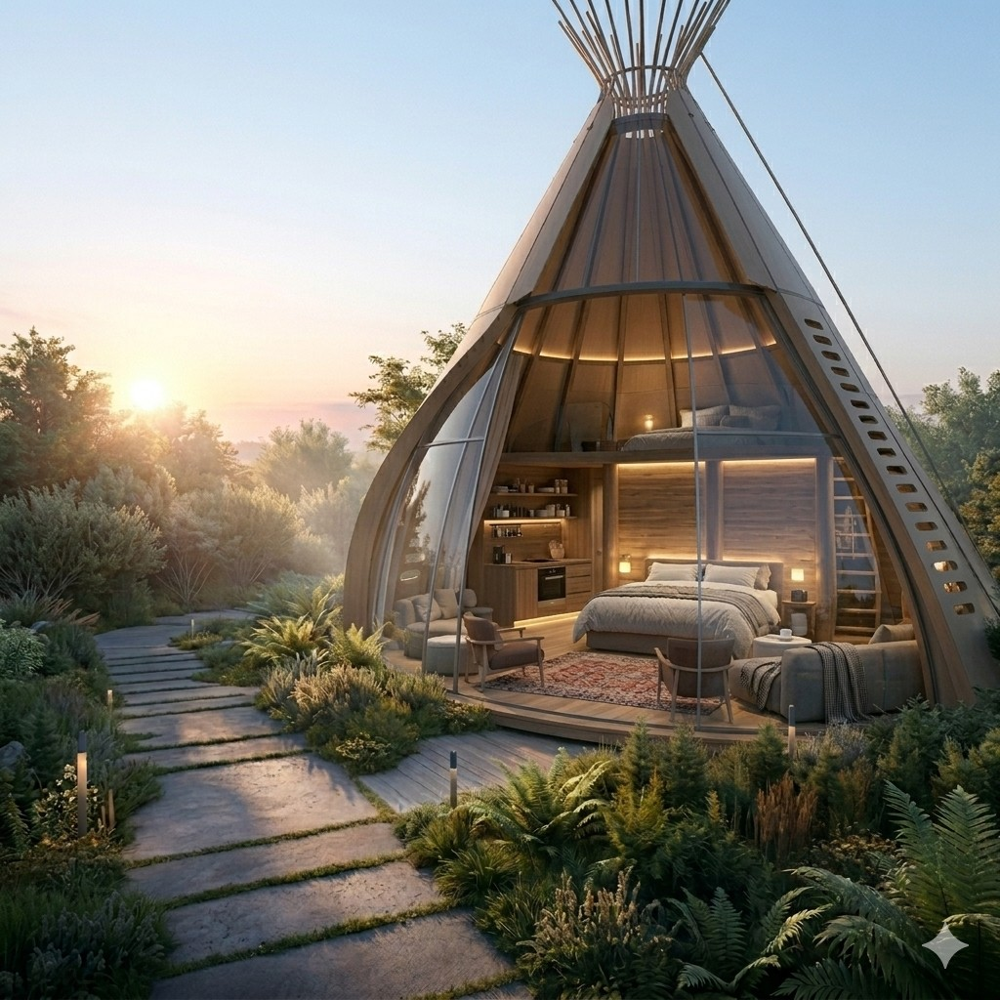
-
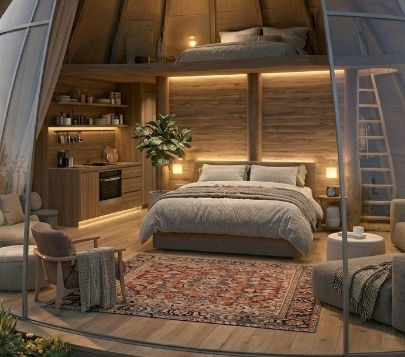
-
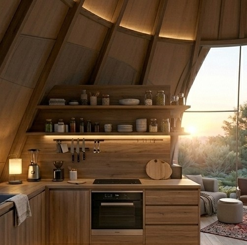
Cottage
-
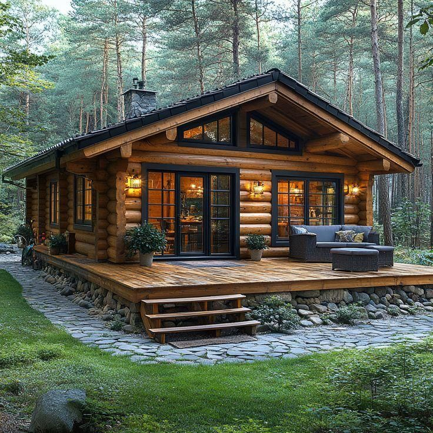
-
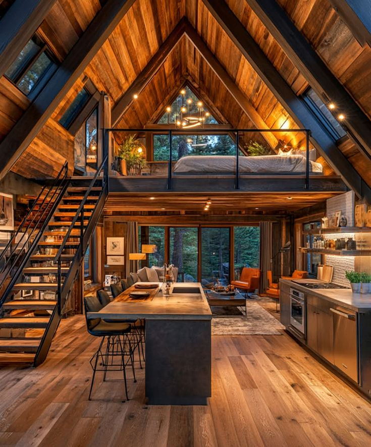
-
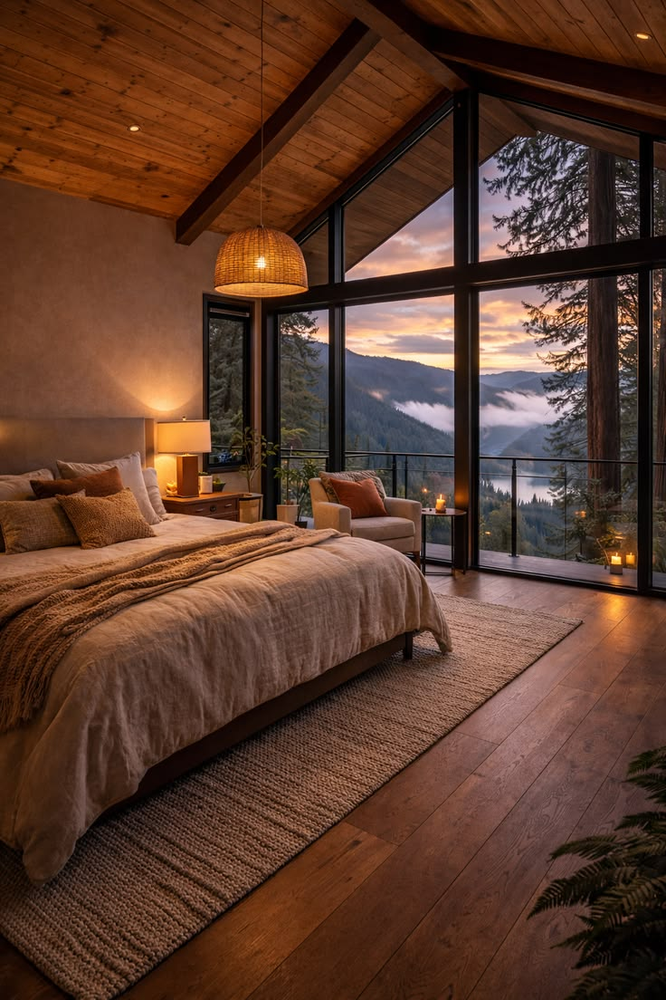
宿泊施設詳細
| 料金 |
大人 ￥9,000～ / 人 小人（小学生） ￥5,000～ / 人 幼児（4歳～小学生） ￥3,000～ / 人 ※3歳以下のお子様は無料です。 |
ベッド | ダブルベッド×２ |
|---|---|---|---|
| 定員 | 4名様 | Wi-Fi | 無料 |
| 夕食 | 農園で採れたお野菜で味わうBBQ | チェックイン チェックアウト |
15：00～ 10：00 |
| 朝食 | 採れたて野菜を使用したモーニング | アメニティ |
タオル、歯ブラシ、クレンジング、 洗顔、シャンプー、トリートメント ドライヤー |